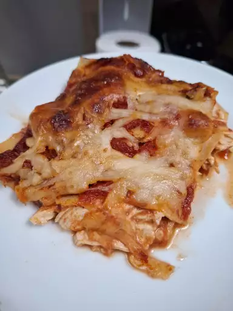

Lasagna Recipe

Description
This chicken Parmesan pasta is the perfect dish to lure kids into the kitchen — what kid doesn't like crispy chicken and spaghetti? This recipe makes twice the sauce needed, so freeze half for another meal.
Ingredients
- 2 tablespoons extra-virgin olive oil
- 2 medium garlic cloves, peeled and crushed
- 1 (28 ounce) can crushed tomatoes
- ½ teaspoon dried basil
- ¼ teaspoon dried oregano
Steps
- Stir together warm water, yeast, and brown sugar in a large mixing bowl; let sit for 10 minutes.
- Stir oil and salt into yeast mixture. Mix in 2 1/2 cups flour until incorporated. Turn dough out onto a clean, floured surface. Knead dough, adding remaining flour, a little at a time, until dough is no longer sticky. Place dough into an oiled bowl.
- Cover with a towel and let rise until doubled in size, about 1 hour.
- Punch down dough and form it into a tight ball. Allow dough to relax for 1 minute before rolling out.